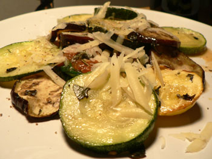

Healthy dinner
Now that I am afflicted with high cholesterol, I have to start trying to not just fry my dinners night after night and then douse them in cream and cheese, which is apparently what I’ve been doing, at least according to my LDL levels.
So I picked up a cookbook today and turned to a recipe for a vegetable terrine with gruyère cheese. Halfway through the recipe, I got irritated with the idiotic procedure and realized it would never work, so I decided to throw it away and strike out on my own.

What you see above is roasted eggplant, zucchini, and yellow squash on a bed of spinach, tomato, garlic, and basil. I guess this has two milligrams of cholesterol or something, and that’s a good thing, right? Either way, it tasted good, although I have decided that I don’t like the texture of eggplant. If anyone has a method that masks the texture, please share it.
I can’t eat like this every night, because I love crispy, greasy meat and dough too much to live without them for more than a day at a time, but I can try lighter meals like this once or twice a week.
Comments
In the photo your eggplant doesn’t really look like it was cooked enough-was it? If it wasn’t, no wonder you didn’t like the texture.
I roasted it for an hour at 400º. It felt very soft, and I just had to turn the oven off. I’ve never liked the texture.
Next thing we know, you’re going to become a vegetarian.
If you want to lower your bad cholesterol, you don’t really have to avoid fats, you just need to eat a bit less of them and make those the fats that are more heart-healthy, like canola and olive oils, avocados, nuts, etc. Did they give you your HDL (“good” cholesterol") number? Eating the healthy fats raises your HDL which helps your overall heart health. As for the eggplant, I hear ya…really only like it fried or mashed into baba ganoush!
Hi Leland,
I know what you mean about the texture of egg plant! I grew up eating it breaded and fried. But since trying to become more healthful myself, I find that egg plant goes well ‘in’ things such as chili, moussaka or tomato sauce. Come to think of it, how about simply baking it with a bit of tomato sauce on it (and cheese, if you haven’t had too much that day!). Easy!
Thanks, ladies! Except for you, Emily. No thanks to you for that horrible insult.
I’m glad you agree about the eggplant, Gerda. It’s the way I used to feel about mushrooms. I eventually got over it, but that day is far away for eggplant.
My feeling about eggplant is cook the shit out of it. Think you’ve cooked it long enough? Cook it that long again.
Or to “sweat it” before cooking. Sprinkle with salt, lay it between paper towels to absorb the water. Then cook the shit out of it.
Moosewood’s Moussaka recipe explains this process and tastes dandy when done. And their bechamel recipe works with olive oil.
One is left to wonder if any nutrients remain in the eggplant after the proceessing, but its all in the name of good health.
And once you’ve tasted how smooth and creamy well done eggplant is . . .
I find myself wondering exactly how nutritious eggplant is to begin with; is there any good reason to eat it if you don’t like it?
As far as cooking it goes, I’m with zp, first remove some of the moisture by salting and draining, then the eggplant must be cooked THOROUGHLY. Even after draining it tends to absorb unconscionable amounts of olive oil. If you like baba ghanoush try throwing the whole thing in the oven and roasting until it is black and collapsed, then cut open and scoop out the flesh, mix with garlic, olive oil, salt, and lemon juice.
But if you don’t like it, this little dish you made here would be great with sweet peppers, and they are full of nutrients; just forget about the eggplant!
Add a comment